FalconEye — Active Directory compromise investigation
An Active Directory intrusion traced through process creation, PowerShell script blocks, Windows logon sessions, Kerberos ticket requests, and execution on a second workstation. The available evidence shows AD reconnaissance, service-path interception, Mimikatz and Rubeus activity, credential misuse, and remote execution. Each conclusion below follows from the recorded events; attempted actions are distinguished from confirmed outcomes.
CyberDefenders — FalconEye · Windows/AD tool recognition reference
1. Environment and telemetry
Splunk's Data Summary shows five Windows hosts: ALI, ABDULLAH, CLIENT01, CLIENT02, and CLIENT03. The Windows data resides in index=folks, with sources for Security, Sysmon, PowerShell Operational, System, and Application logs. ABDULLAH records child-domain controller authentication events; the attacker later targets the parent domain Ali.Alhakami.

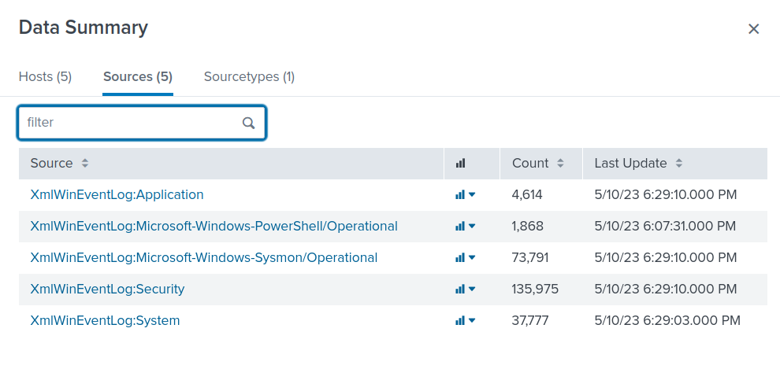
Initial searches establish the index and event coverage:
| eventcount summarize=false index=*
index=folks
| stats count min(_time) as first_seen max(_time) as last_seen by host source
| convert ctime(first_seen) ctime(last_seen)
| sort host source
The central event types are:
| Event source | Event ID | Investigative purpose |
|---|---|---|
| Windows Security | 4624 | Logon success, type, identity, logon-session ID |
| Windows Security | 4768 | Kerberos TGT request on a domain controller |
| Windows Security | 4769 | Kerberos service-ticket request on a domain controller |
| PowerShell Operational | 4104 | PowerShell script-block content |
| Sysmon Operational | 1 | Process image, command line, parent, user, hashes, Logon ID |
| Sysmon Operational | 11 | File creation/overwrite and writing process |
Timestamp handling. Times in the tables below follow Splunk's displayed _time for the lab. Sysmon also includes UtcTime and the event XML has TimeCreated. Two 10 May program.exe records show UtcTime around 04:57:08 but XML TimeCreated around 04:57:36; the precise field is called out wherever relevant.
2. Attack timeline
| Date / time | Host | Recorded event | Finding |
|---|---|---|---|
| 8 May, 07:03–07:09 | ABDULLAH | Security 4624 | Six Type 9 logons for Administrator using Advapi; distinct from the later seclogo set. |
| 9 May, 12:25:36 / 12:25:45 | CLIENT02 | Sysmon 1 | C:\program.exe executes as SYSTEM from services.exe, hash F951…A2EA. |
| 10 May, 03:28:41 | CLIENT02 | PowerShell 4104 | Invoke-BloodHound function appears in a script block. |
| 10 May, ~04:57:08 | CLIENT02 | Sysmon 1 (UtcTime) |
Service-path interception again launches C:\program.exe as SYSTEM, now hash 8ACC…5BD2. |
| 10 May, 05:08:57 | CLIENT02 | Sysmon 11 | PowerShell creates C:\Users\HelpDesk\fun.exe. |
| 10 May, 05:10:30 | CLIENT02 | Sysmon 1 | fun.exe, whose metadata identifies Mimikatz, is executed by HelpDesk. |
| 10 May, 05:49:10 | CLIENT02 | Sysmon 1 | Rubeus-like asktgt /user:Mohammed /aes256:… /createnetonly:… /ptt. |
| 10 May, 05:49:11 | ABDULLAH / CLIENT02 | Security 4768 / 4624 | Successful Mohammed TGT issuance; initial observed HelpDesk Type 9 seclogo session. |
| 10 May, 06:18:19 | CLIENT02 / ABDULLAH | Sysmon 1 / Security 4769 | S4U command impersonates Administrator toward HTTP/Client03; two successful TGS events for Client02$. |
| 10 May, 06:21:44 | CLIENT03 | Security 4624 + Sysmon 1 | Kerberos Type 3 Administrator logon and wsmprovhost.exe in the same Logon ID. |
| 10 May, 06:49:48 | CLIENT02 | Sysmon 1 + Security 4624 | Rubeus-style TGT request for it-support and Type 9 seclogo session. |
| 10 May, 07:16–07:19 | CLIENT02 | Sysmon 1 | Repeated Rubeus-style asktgt requests for Administrator with AES256 keys. |
| 10 May, 07:36:07 | CLIENT02 | Sysmon 1 | SafetyKatz kerberos::golden command specifies trust_tgt.kirbi for the parent domain. |
| 10 May, 07:44:42 / 07:51:24 | CLIENT02 | Sysmon 1 | Further ticket-forging commands reference trust_tgt.kirbi and trust-test2.kirbi. |
| 10 May, 08:09:36 | CLIENT02 | Sysmon 1 | fun.exe is launched with lsadump::dcsync /user:Abdullah-work\Administrator. |
The timeline is not an assertion that every observed event is malicious. The exploit-related events on 9 May and other earlier ticket requests need to be interpreted in context, not silently assigned to a single continuous attacker session.
3. NewCredentials logons — finding the initial account and host
A broad search for successful logons returned thousands of events. Restricting to Logon Type 9 produced 12 events across two hosts:
index=folks EventCode=4624 Logon_Type=9
| table _time host TargetDomainName TargetUserName LogonProcessName \
TargetOutboundUserName TargetOutboundDomainName SubjectLogonId TargetLogonId
| sort _time
| Host | Account | Count | Logon process | Observed dates |
|---|---|---|---|---|
| ABDULLAH | Abdullah-work\Administrator |
6 | Advapi |
8 May |
| CLIENT02 | Abdullah-work\HelpDesk |
6 | seclogo |
10 May |
The earliest matching seclogo event occurred on 10 May at 05:49:11, on CLIENT02. The earlier Advapi events should not be mistaken for the initial seclogo-based activity.

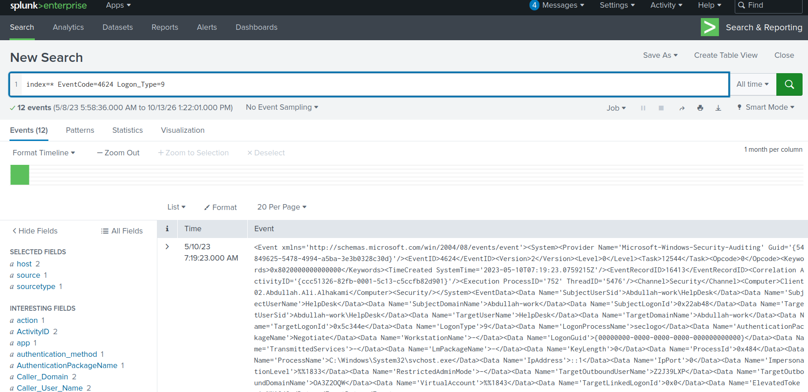
Why Type 9 matters
Type 9 — NewCredentials creates a local security session while allowing separate credentials for later outbound connections. It is used legitimately by mechanisms such as runas /netonly. Its creation does not show that a remote machine accepted those credentials.
In the six HelpDesk events, the local account remains HelpDesk, but TargetOutboundUserName and TargetOutboundDomainName contain different seemingly generated values, for example:
05:49:11 QSBL8AO5\DL7KFQY9
06:49:48 ZFF9NC8E\LZMMWK9A
07:15:17 3FSA5T4D\E7G29SPP
Such placeholder-like values are compatible with tooling that creates a NewCredentials session before manipulating network authentication material. They are not proof of NTLM pass-the-hash. AuthenticationPackageName=Negotiate is likewise not proof that NTLM was selected.
Logon-session linkage: The Type 9 event at 06:49:48 creates TargetLogonId=0x504b8b. A later Type 9 event at 07:15:17 has SubjectLogonId=0x504b8b, showing that the earlier session initiated another session. The process command lines discussed below provide further context for the seclogo events.
4. BloodHound PowerShell enumeration
On 10 May at 03:28:41, CLIENT02 recorded a PowerShell Event ID 4104 script block containing function Invoke-BloodHound and text describing a C# ingestor loaded in memory through reflection.
First inspect script-block telemetry:
index=folks host=CLIENT02 EventCode=4104
This produced 464 events. Narrow to a distinctive tool signature:
index=folks host=CLIENT02 EventCode=4104
| search ScriptBlockText="*bloodhound*"
| table _time ScriptBlockText
The relevant script includes:
function Invoke-BloodHound {
<#
.SYNOPSIS
Runs the BloodHound C# Ingestor using reflection.
#>
}
The excerpt shows identifying lines, not the complete function implementation.

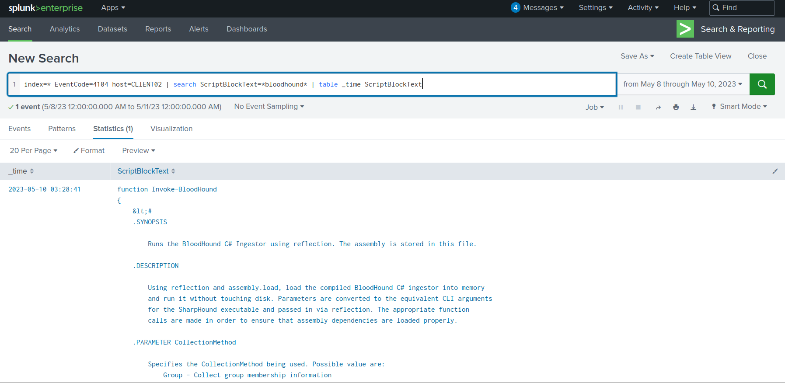
The tools and their roles
BloodHound models AD object relationships and potential attack paths; SharpHound collects the data. In older collection workflows, Invoke-BloodHound provides a PowerShell wrapper around the C# ingestor. Other tools worth recognising include PowerView (PowerShell AD enumeration) and ADRecon (broader AD configuration collection).
When the tool name is unknown, investigate behaviour first: LDAP queries, DirectorySearcher, directory-related PowerShell functions, and enumeration of groups, users, trusts, sessions, or ACLs. Function names and code comments then help identify a particular toolkit.
Evidence boundary: Event 4104 confirms the script-block content was processed by PowerShell; a logged function definition alone does not prove Invoke-BloodHound was called or that collection completed.
5. Unquoted service path and privilege escalation
A distinctive Sysmon pattern on CLIENT02 shows a different image executing from the command line's intended executable path.
index=folks host=CLIENT02 CommandLine="C:\\Program Files\\*"
NOT Image="C:\\Program Files\\*"
| stats count by Image CommandLine
The search yielded four executions with the same discrepancy:
Image C:\program.exe
CommandLine C:\Program Files\Basic Monitoring\Automate-Basic-Monitoring.exe
ParentImage C:\Windows\System32\services.exe
User NT AUTHORITY\SYSTEM
IntegrityLevel System

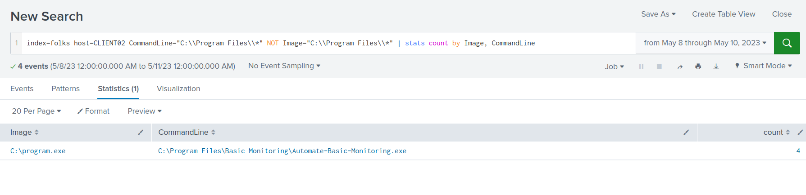
Why an unquoted path is dangerous
If a service's executable path contains spaces but is not enclosed in quotes, Windows may resolve an unintended executable before the intended one. For example, an unquoted path:
C:\Program Files\Basic Monitoring\Automate-Basic-Monitoring.exe
may result in Windows looking for candidates including:
C:\Program.exe
C:\Program Files\Basic.exe
C:\Program Files\Basic Monitoring\Automate-Basic-Monitoring.exe
If an attacker can write a matching executable at an earlier candidate path and trigger a service launch, it can run with the service's privileges. Here the recorded parent is services.exe and the actual executed image is C:\program.exe with SYSTEM integrity. That is much stronger evidence of successful path interception than merely observing a potentially vulnerable unquoted configuration.
Service-name limitation: The log proves the affected configured binary path, not the registered Windows service name. The actual service name was not established from the shared service-configuration evidence; it would require correlation with service records (for example System 7045, when applicable, or HKLM\SYSTEM\CurrentControlSet\Services\…\ImagePath). An executable filename and a service name are not interchangeable.
6. Executable hashes and payload staging
Two file contents at C:\program.exe
Four Sysmon Event ID 1 records show the same image path on different dates with different SHA-256 values:
| Executions | SHA-256 |
|---|---|
| 9 May, 12:25:36 and 12:25:45 | F951F9FE207C2D9E412240BD0AEFF7233AB78712063EB1723DFAAA3B74BAA2EA |
| 10 May, ~04:57 | 8ACC5D98CFFE8FE7D85DE218971B18D49166922D079676729055939463555BD2 |
index=folks host=CLIENT02 EventCode=1 Image="C:\\program.exe"
| rex field=Hashes "SHA256=(?<sha256>[A-Fa-f0-9]{64})"
| table _time UtcTime Image CommandLine ParentImage User IntegrityLevel sha256
| sort _time
A cryptographic hash fingerprints file contents, not a file path. These events establish that the executable contents differed; they do not tell us whether the binary was replaced, patched, or rebuilt. Both samples also share an IMPHASH (B093B9B6223AF7F9E72D34D8765AA77F), reflecting similar PE import characteristics rather than identical file contents.
fun.exe: creation versus execution
index=folks host=CLIENT02 EventCode=11 TargetFilename="*fun.exe"
| table _time Image TargetFilename
| sort _time
At 10 May, 05:08:57, Sysmon Event ID 11 recorded powershell.exe creating C:\Users\HelpDesk\fun.exe.

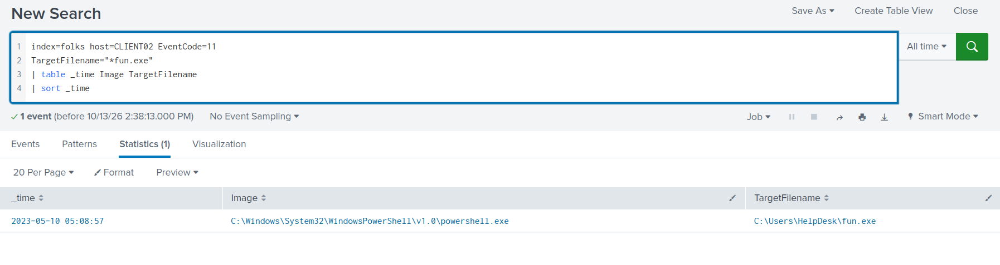
index=folks host=CLIENT02 EventCode=1 Image="*fun.exe"
| table _time Image CommandLine OriginalFileName Description Product User ParentImage Hashes
| sort _time
The first observed execution is 05:10:30, approximately 93 seconds after file creation. PE metadata identifies:
Image C:\Users\HelpDesk\fun.exe
OriginalFileName mimikatz.exe
Description mimikatz for Windows
Product mimikatz
ParentImage ...\powershell.exe
User Abdullah-work\HelpDesk
SHA256 CFD90BF9CB627FB3574096B9D1C33522A46DB7412CD0FF42226474BF6A74CD77
Sysmon 11 answers when a file appeared on disk; Sysmon 1 answers when it ran. A FileCreate event is not by itself proof of an internet download—it may also represent a copy, extraction, or local write. The executable metadata is useful for recognising a renamed tool, but it can be changed by an adversary.
7. Mimikatz execution and DCSync
The attacker repeatedly executed the renamed fun.exe as HelpDesk. The command lines for earlier executions contain only the executable name; the 08:09:36 process creation event records an explicit command:
index=folks host=CLIENT02 EventCode=1 Image="*fun.exe"
| table _time Image CommandLine User ParentImage
| sort _time

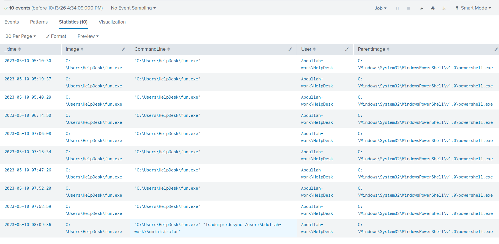
"C:\Users\HelpDesk\fun.exe" "lsadump::dcsync /user:Abdullah-work\Administrator"
lsadump::dcsync is Mimikatz's command for requesting AD credential secrets using directory replication mechanisms. The /user: argument specifies the account whose secrets are requested. DCSync generally requires sufficiently privileged replication permissions; it does not require launching Mimikatz directly on the domain controller.
What the event proves: the program was started with a DCSync command directed at Abdullah-work\Administrator. It does not independently establish that the domain controller returned the secrets. Corroboration may include appropriately configured Security 4662 auditing of replication-access rights and directory replication evidence. Interactive commands typed after launching Mimikatz are not normally captured by Sysmon Event 1, which records the process launch command line.
Mimikatz in context. It is a credential and Kerberos manipulation toolkit, not a synonym for all malware. Key capabilities include LSASS credential access (sekurlsa::logonpasswords), pass-the-hash or pass-the-key (sekurlsa::pth), directory replication abuse (lsadump::dcsync), ticket import (kerberos::ptt), and ticket forging (kerberos::golden). See the tool recognition reference.
8. Kerberos key reuse: Mohammed and it-support
A process labelled Microsoft-Update.exe, executed under Abdullah-work\HelpDesk, used Rubeus-style command syntax to request Kerberos tickets with stolen or otherwise supplied AES256 key material.
index=folks host=CLIENT02 EventCode=1
| search CommandLine="*asktgt*"
| table _time Image User CommandLine
| sort _time
Observed activity includes:
| Time, 10 May | Target identity | Relevant command arguments |
|---|---|---|
| 05:49:10 | Mohammed | asktgt /user:Mohammed /aes256:… /opsec /createnetonly:… /ptt |
| 06:49:48 | it-support | asktgt /user:it-support /aes256:… /opsec /createnetonly:… /ptt |
| 07:16:39 onward | Administrator | Multiple asktgt /user:Administrator /aes256:… attempts |
For the first observed Mohammed command, the AES256 key specified in the process arguments is:
facca59ab6497980cbb1f8e61c446bdbd8645166edd83dac0da2037ce954d379
HelpDesk is the operator context; Mohammed is the target credential identity
User=Abdullah-work\HelpDesk in Sysmon identifies who ran the process locally. /user:Mohammed identifies whose Kerberos ticket Rubeus attempted to obtain. These accounts play different roles. A recorded command does not imply Mohammed personally operated CLIENT02.
Rubeus asktgt requests a TGT; /aes256 supplies a Kerberos AES key; /createnetonly creates a NewCredentials process; /ptt requests that the ticket be imported. At 05:49:11, one second after the command, CLIENT02 recorded a Type 9 seclogo session. The same pattern appears for it-support at 06:49:48: the local Type 9 event still identifies HelpDesk, while the Rubeus command targets it-support.
Did the Mohammed TGT request succeed?
Search the domain controller's Security 4768 events:
index=folks EventCode=4768 "Mohammed"
| table _time host user TargetUserName IpAddress Status TicketEncryptionType
| sort _time
The relevant event at 05:49:11 reports:
host ABDULLAH
TargetUserName Mohammed
IpAddress ::ffff:192.168.2.101
Status 0x0
TicketEncryptionType 0x12

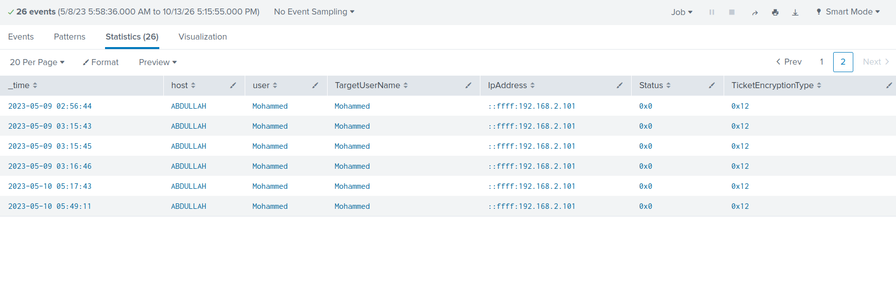
Status=0x0 means the domain controller issued a TGT for Mohammed. The exact same-second correlation with the Rubeus command makes a connection likely; it is still useful to validate the source host of 192.168.2.101 before asserting origin beyond doubt.
Ticket encryption types: 0x11 = AES128, 0x12 = AES256, 0x17 = RC4-HMAC. These values in TicketEncryptionType describe the issued ticket's encryption, not necessarily the credential or pre-authentication key that the client supplied. An RC4 ticket by itself does not prove pass-the-hash or over-pass-the-hash. The strongest evidence here is the Rubeus command containing /aes256, corroborated by successful TGT issuance.
Was Mohammed's ticket subsequently used?
index=folks EventCode=4769 "Mohammed"
| table _time host user ServiceName IpAddress Status TicketEncryptionType
| sort _time
A successful 4769 at 06:08:14 shows Mohammed requesting a service ticket associated with ABDULLAH$, with Status=0x0 and TicketEncryptionType=0x12. That proves service-ticket issuance, not use at a destination or that this TGS was obtained with the specific 05:49 TGT. Earlier Mohammed TGTs also appear in the data. Separate 8 May RC4 (0x17) requests involving it-support are worth contextual examination, but not proof of Kerberoasting or direct evidence for the 10 May key-reuse command.
Mohammed is the first observed asktgt /aes256 identity in the supplied 10 May command sequence, not the only account whose key is used. it-support and Administrator are subsequently targeted; the exercise's singular wording should not conceal these additional identities.
9. Kerberos delegation abuse targeting CLIENT03
The 10 May 06:18:19 Sysmon event on CLIENT02 contains a Rubeus-style s4u command executed as HelpDesk:
index=folks host=CLIENT02 EventCode=1
| search CommandLine="*Client03*"
| table _time Image User CommandLine
| sort _time

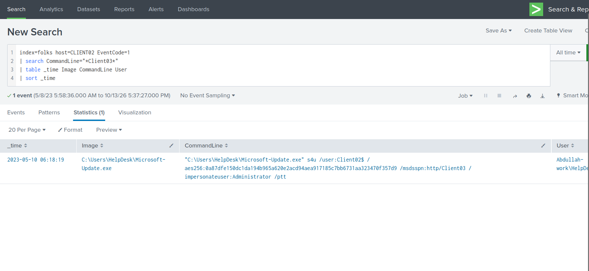
"C:\Users\HelpDesk\Microsoft-Update.exe" s4u
/user:Client02$ /aes256:<key>
/msdsspn:http/Client03 /impersonateuser:Administrator /ptt
Interpreting the SPN
A Service Principal Name (SPN) identifies a Kerberos service, commonly written as service/host. In http/Client03, http is the service class and Client03 the target host. Other frequently encountered SPN service classes include cifs (SMB), ldap (directory service), host (host-associated services) and MSSQLSvc (SQL Server). HTTP is relevant to WinRM because Windows Remote Management uses HTTP or HTTPS as a transport, but the SPN alone does not identify the exact application or prove a connection succeeded.
/user:Client02$ selects the machine principal whose key material is supplied; /impersonateuser:Administrator requests S4U ticket operations on behalf of Administrator; /msdsspn: gives the service principal targeted by the delegation workflow. This is strong evidence of an attempted Kerberos delegation abuse, without by itself proving a ticket usable as Administrator was obtained.
Domain-controller corroboration
index=folks EventCode=4769
earliest="05/10/2023:06:18:00" latest="05/10/2023:06:23:00"
| table _time host user ServiceName IpAddress Status TicketEncryptionType
| sort _time
At 06:18:19, ABDULLAH recorded two successful service-ticket requests:
| Requesting principal | ServiceName |
Source IP | Status | Ticket encryption |
|---|---|---|---|---|
Client02$@ABDULLAH.ALI.ALHAKAMI |
CLIENT03$ |
192.168.2.101 |
0x0 |
0x12 |
Client02$@ABDULLAH.ALI.ALHAKAMI |
CLIENT02$ |
192.168.2.101 |
0x0 |
0x12 |

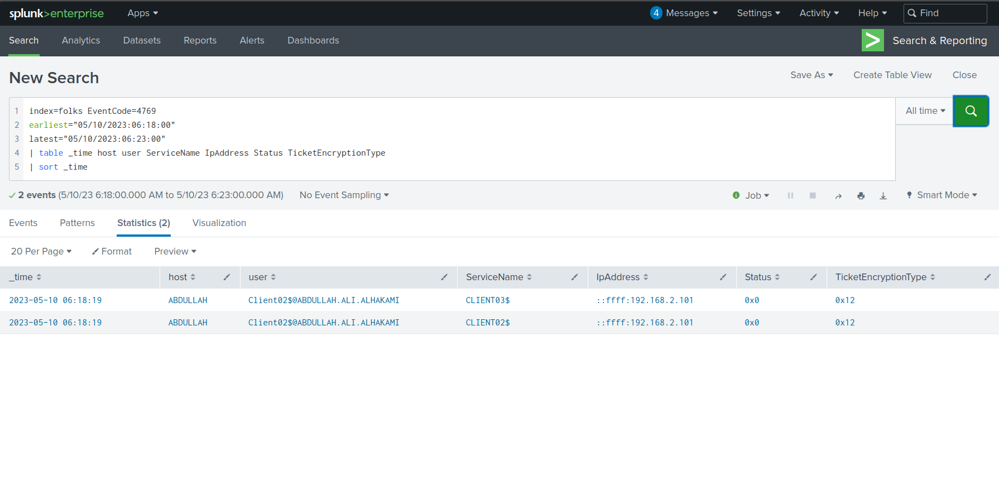
These events support the S4U sequence by principal, target and timing. The logs show Client02$ as the requesting principal, not Administrator, and do not alone prove a ticket impersonating Administrator was issued. CLIENT03$ is the target machine account, whereas HTTP/Client03 is the SPN requested by the tool.
10. Confirming WinRM execution on CLIENT03
The S4U command points toward CLIENT03, but the stronger evidence of successful remote administrative activity comes from CLIENT03's own Security and Sysmon events.
Process evidence
index=folks host=CLIENT03 EventCode=1
(Image="*wsmprovhost.exe" OR ParentImage="*wsmprovhost.exe")
| table _time User LogonId Image ParentImage ProcessGuid ParentProcessGuid CommandLine
| sort _time
The important process creation event is 10 May, 06:21:44:
Image C:\Windows\System32\wsmprovhost.exe
CommandLine C:\Windows\system32\wsmprovhost.exe -Embedding
User Abdullah-work\Administrator
IntegrityLevel High
LogonId 0x23f77d3
ProcessGuid {7394e7e8-37f8-645b-8e25-000000000800}
Other results show whoami.exe and HOSTNAME.EXE as children of wsmprovhost.exe, consistent with an operator checking identity and location within a remote PowerShell session.

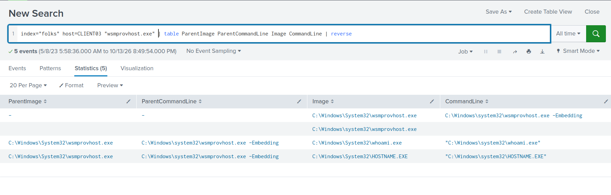
At 06:21:45, Sysmon 11 records that same wsmprovhost.exe instance creating a __PSScriptPolicyTest_*.ps1 file in Administrator's temporary directory. The matching ProcessGuid connects the file creation to the process. Such a temporary script policy test can be normal PowerShell behaviour; it is not itself malicious.
Authentication-to-process correlation
Take LogonId=0x23f77d3 from the Sysmon process and search CLIENT03's successful logons:
index=folks host=CLIENT03 EventCode=4624 TargetLogonId="0x23f77d3"
| table _time TargetUserName Logon_Type IpAddress AuthenticationPackageName TargetLogonId
| sort _time
The matching event at 06:21:44 shows:
| Security 4624 field | Recorded value |
|---|---|
TargetUserName |
Administrator |
Logon_Type |
3 — Network |
AuthenticationPackageName |
Kerberos |
TargetLogonId |
0x23f77d3 |
IpAddress |
- (not populated) |

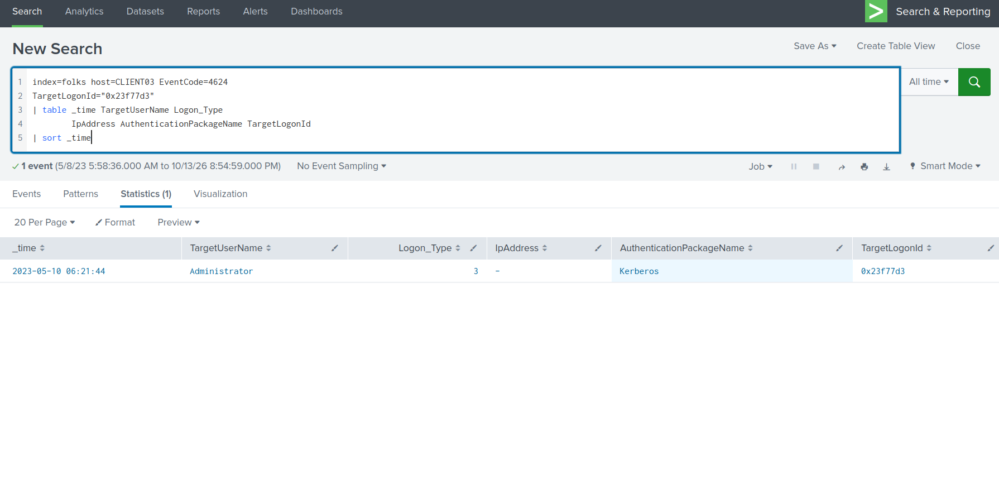
The matching Logon IDs on the same host link the successful Kerberos Administrator network logon to the wsmprovhost.exe process. Together with the process ancestry and the preceding HTTP-SPN S4U activity, this is strong evidence of WinRM/PowerShell remote administration on CLIENT03 as Administrator.
Attribution limit: The destination 4624 event has no source IP. Correlation strongly supports the preceding CLIENT02 attack sequence, but that particular authentication record does not independently prove CLIENT02 was the source. Identifying an IP in a 4769 event is not equivalent to matching the source IP of the eventual destination logon.
11. Forged tickets and access to the parent domain
The attacker later ran Better-to-trust.exe as HelpDesk on CLIENT02. Executable metadata identifies the renamed binary as SafetyKatz (OriginalFileName=BetterSafetyKatz.exe), a loader providing Mimikatz functionality.
A search for the output ticket file extension retrieved three process creation events:
index=folks "*.kirbi"
| table _time host EventCode Image OriginalFileName CommandLine User
| sort _time

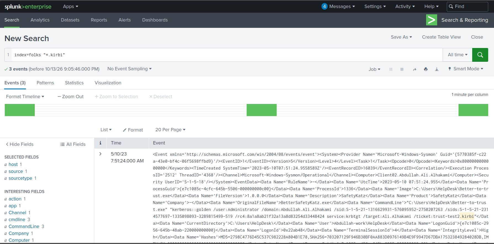
| Time, 10 May | Ticket filename in command | Crypto option |
|---|---|---|
| 07:36:07 | trust_tgt.kirbi |
AES256 |
| 07:44:42 | trust_tgt.kirbi |
RC4 |
| 07:51:24 | trust-test2.kirbi |
RC4 |
The first command includes:
"Better-to-trust.exe" "kerberos::golden
/user:Administrator
/domain:Abdullah.Ali.Alhakami
/sid:S-1-5-21-1316629931-576095952-2750207263
/sids:S-1-5-21-2314577697-1335098093-3289815499-519
/aes256:<key> /service:krbtgt
/target:Ali.Alhakami
/ticket:trust_tgt.kirbi"
Arguments shown as a readable excerpt; the original log preserves the full command string and some options lack a slash in the recorded text.
Why trusts, SIDs and ticket files matter
The command invokes kerberos::golden for ticket forging, specifying Administrator, the child-domain identity context (Abdullah.Ali.Alhakami), an additional SID ending in -519 (the well-known Enterprise Admins RID), and the parent-domain target Ali.Alhakami. In a multi-domain forest, trust relationships permit cross-domain Kerberos authentication; forged ticket material and injected SIDs can be used in attempts to gain privileges across those trust boundaries.
A .kirbi file is a commonly used representation of Kerberos ticket material. /ticket: specifies a desired output filename; /ptt requests ticket import into a session. The command lines establish ticket-forging attempts and the specified output names, not independently that files were written, accepted by the parent DC, or used to access it.
The primary filename associated with the observed parent-domain targeting commands is trust_tgt.kirbi. A separate later attempt specifies trust-test2.kirbi, which should be retained in the chronology rather than conflated with the earlier output.
12. Investigation results and remaining uncertainties
Findings at a glance
| Investigation objective | Evidence-based result |
|---|---|
Initial suspicious Type 9 / seclogo account |
Abdullah-work\HelpDesk |
| Local compromised machine | CLIENT02 |
| AD enumeration tool | BloodHound (Invoke-BloodHound script block) |
| Suspected vulnerable service binary | C:\Program Files\Basic Monitoring\Automate-Basic-Monitoring.exe — registered service name not verified |
| SYSTEM-level path-interception image / SHA-256 | C:\program.exe / 8ACC5D98…555BD2 on 10 May |
fun.exe first file creation |
2023-05-10 05:08:57 (reported minute: 05:08) |
| DCSync command | lsadump::dcsync /user:Abdullah-work\Administrator |
Renamed fun.exe |
mimikatz.exe |
Earliest observed AES256 asktgt identity |
Mohammed (facca59a…54d379) |
| Kerberos SPN targeting CLIENT03 | http/Client03 |
| CLIENT03 remote-session host process | wsmprovhost.exe |
it-support-related new credentials logon |
Type 9 (local session account: HelpDesk) |
| Parent-domain ticket output specified | trust_tgt.kirbi; later attempt: trust-test2.kirbi |
What remains unverified
- Service identification: The recorded service binary path does not expose a registered service name; no service configuration record confirming that name was supplied.
- PowerShell enumeration: The
Invoke-BloodHounddefinition was logged; successful collection was not independently confirmed. - DCSync outcome: Mimikatz was launched with the command, but replication success and returned secrets were not shown.
- Credential origin: AES256 keys were used in process arguments; how the operator obtained them is not established.
- Lateral-movement source: The CLIENT03 logon-to-process match is firm, but its 4624
IpAddressis missing. - Parent-domain access: Ticket-forging commands are visible; creation and successful use of a
.kirbiticket againstALIwere not demonstrated.
The most reusable correlation in this case is CLIENT03 Security 4624 TargetLogonId ↔ Sysmon 1 LogonId. It links authentication to the process executing in the authenticated session. Process GUIDs similarly connect child processes and file writes; file hashes distinguish binary contents; and cross-host Kerberos events supply additional context without eliminating every attribution gap.
13. Technical references
- Microsoft — Windows Security Event 4624 (logon types)
- Microsoft — Windows Security Event 4768 (Kerberos TGT)
- Microsoft — Windows Security Event 4769 (Kerberos service ticket)
- Microsoft Sysinternals — Sysmon events
- SpecterOps — BloodHound legacy collector reference
- GhostPack — Rubeus
- MITRE ATT&CK T1574.009 — Unquoted path interception
- MITRE ATT&CK T1003.006 — DCSync
- MITRE ATT&CK T1558.001 — Golden Ticket
- Windows / AD tool recognition reference